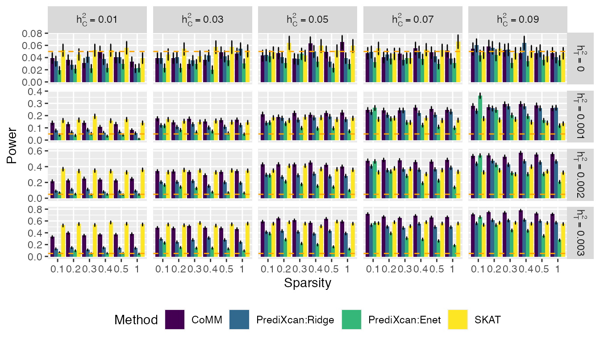
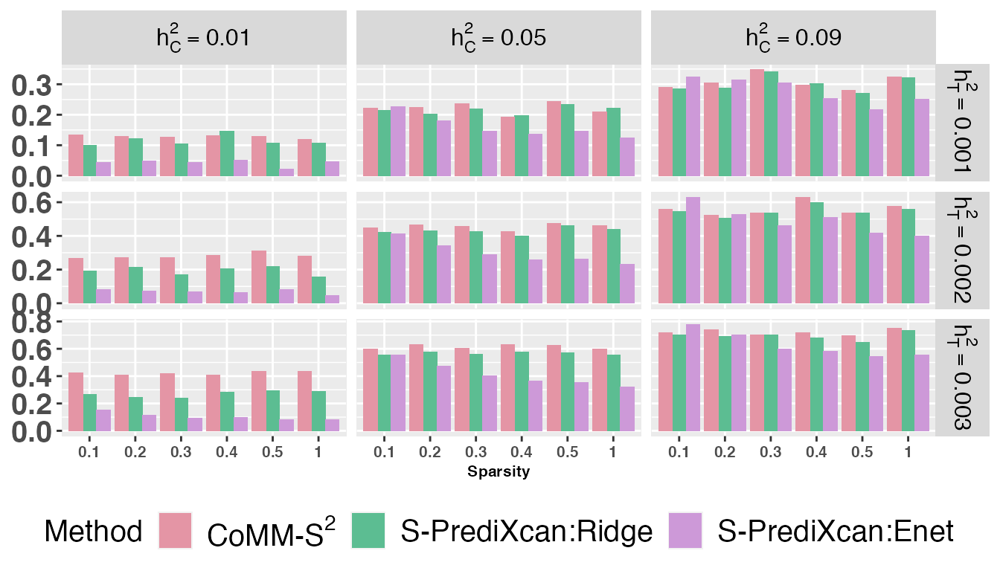

vignettes/CoMM.Rmd
CoMM.RmdThis vignette provides an introduction to the CoMM package. R package CoMM implements CoMM, a collaborative mixed model to dissecting genetic contributions to complex traits by leveraging regulatory information. The package can be installed with the command:
install_github("gordonliu810822/CoMM")
The package can be loaded with the command:
We first generate genotype data using function genRawGeno:
library(mvtnorm)
L = 1; M = 100; rho =0.5
n1 = 350; n2 = 5000;
maf = runif(M,0.05,0.5)
X = genRawGeno(maf, L, M, rho, n1 + n2);Then, effect sizes are generated from standard Gaussian distribution with sparse structure:
Subsequently, the gene expression y is generated by controlling cellular heritability at prespecified level (h2y):
Finally, the phenotype data is generated as the generative model of CoMM with a prespecified trait heritability (h2) as:
h2 = 0.001;
y1 <- y[1:n1]
X1 <- X[1:n1,]
y2 <- y0[(n1+1):(n1+n2)]
X2 <- X[(n1+1):(n1+n2),]
alpha0 <- 3
alpha <- 0.3
sz2 <- var(y2*alpha) * ((1-h2)/h2)
z <- alpha0 + y2*alpha + rnorm(n2,0,sqrt(sz2))The genotype data X1 and X2 are normalized as
y = y1;
mean.x1 = apply(X1,2,mean);
x1m = sweep(X1,2,mean.x1);
std.x1 = apply(x1m,2,sd)
x1p = sweep(x1m,2,std.x1,"/");
x1p = x1p/sqrt(dim(x1p)[2])
mean.x2 = apply(X2,2,mean);
x2m = sweep(X2,2,mean.x2);
std.x2 = apply(x2m,2,sd)
x2p = sweep(x2m,2,std.x2,"/");
x2p = x2p/sqrt(dim(x2p)[2])
w2 = matrix(rep(1,n2),ncol=1);
w1 = matrix(rep(1,n1),ncol=1);Initilize the parameters by using linear mixed model (function lmm_pxem, LMM implemented (n < p) using PX-EM algorithm, function lmm_pxem2, LMM implemented (n > p)):
fm0 = lmm_pxem2(y, w1,x1p, 100)
sigma2beta =fm0$sigma2beta;
sigma2y =fm0$sigma2y;
beta0 = fm0$beta0;Fit CoMM w/ and w/o constraint that alpha = 0 as
fmHa = CoMM_covar_pxem(y, z, x1p, x2p, w1, w2,constr = 0);
fmH0 = CoMM_covar_pxem(y, z, x1p, x2p, w1, w2,constr = 1);
loglikHa = max(fmHa$loglik,na.rm=T)
loglikH0 = max(fmH0$loglik,na.rm=T)
tstat = 2 * (loglikHa - loglikH0);
pval = pchisq(tstat,1,lower.tail=F)
alpha_hat = fmHa$alpha The example of running CoMM using GWAS and eQTL data in plink binary format
file1 = "1000G.EUR.QC.1";
file2 = "NFBC_filter_mph10";
file3 = "Geuvadis_gene_expression_qn.txt";
file4 = "";
file5 = "pc5_NFBC_filter_mph10.txt";
whichPheno = 1;
bw = 500000;Here, file1 is the prefix for eQTL genotype data in plink binary format, file2 is the GWAS data in plink binary format, file3 is the gene expression file with extended name, file4 and file5 are covariates file for eQTL and GWAS data, respectively. Then run fm = CoMM_testing_run(file1,file2,file3, file4,file5, whichPheno, bw);. For gene expresion file, it must have the following format (rows for genes and columns for individuais and note that it must be tab delimited):
| lower | up | genetype1 | genetype2 | TargetID | Chr | HG00105 | HG00115 |
|---|---|---|---|---|---|---|---|
| 59783540 | 59843484 | lincRNA | PART1 | ENSG00000152931.6 | 5 | 0.5126086 | 0.7089508 |
| 48128225 | 48148330 | protein_coding | UPP1 | ENSG00000183696.9 | 7 | 1.4118007 | -0.0135644 |
| 57846106 | 57853063 | protein_coding | INHBE | ENSG00000139269.2 | 12 | 0.5755268 | -1.0162217 |
| 116054583 | 116164515 | protein_coding | AFAP1L2 | ENSG00000169129.8 | 10 | 1.1117776 | 0.0407033 |
| 22157909 | 22396763 | protein_coding | RAPGEF5 | ENSG00000136237.12 | 7 | 0.2831573 | -0.1772559 |
| 11700964 | 11743303 | lincRNA | RP11-434C1.1 | ENSG00000247157.2 | 12 | 0.2550282 | -0.2831573 |
To make ‘CoMM’ further speeding, we implement multiple thread version of ‘CoMM’ by just run fm = CoMM_testing_run_mt(file1,file2,file3, file4,file5, whichPheno, bw, coreNum); where coreNum = 24 is the number of cores in your CPU.
The following data and codes are used to produce one of the figures in the Yang et al. (2018).
dat_rej = dat[[3]];
dat_rej$h2z=paste("",dat_rej$h2,sep="")
dat_rej$Power = dat_rej$rej_prop
dat_rej$Sparsity = dat_rej$beta_prop
dat_rej$sd_rej = as.numeric(as.character(dat_rej$sd_rej))
dat_rej = dat_rej[dat_rej$Method!="2-stage:AUDI",]
library(plyr)
dat_rej$Method=revalue(dat_rej$Method, c("AUDI"="CoMM"))
dat_rej$Method=revalue(dat_rej$Method, c("2-stage:Ridge"="PrediXcan:Ridge"))
dat_rej$Method=revalue(dat_rej$Method, c("2-stage:Enet"="PrediXcan:Enet"))
dat_rej$Method=droplevels(dat_rej$Method)
rho = 0.5; n2 = 8000;
t1e_rej = dat_rej[dat_rej$RhoX==rho&dat_rej$n2==n2,]
t1e_rej$h2z = factor(t1e_rej$h2z)
t1e_rej$h2y = factor(t1e_rej$h2y)
t1e_rej$Sparsity = factor(t1e_rej$Sparsity)
t1e_rej$n2 = factor(t1e_rej$n2)
t1e_rej$Method <- ordered(t1e_rej$Method, levels = c("CoMM","PrediXcan:Ridge","PrediXcan:Enet","SKAT"))
t1e_rej$Power = as.numeric(as.character((t1e_rej$Power)))
t1e_rej$h2y2 <- factor(t1e_rej$h2y, labels = c("h[C]^2==0.01", "h[C]^2==0.03",
"h[C]^2==0.05", "h[C]^2==0.07", "h[C]^2==0.09"))
t1e_rej$h2z2 <- factor(t1e_rej$h2z, labels = c("h[T]^2==0", "h[T]^2==0.001",
"h[T]^2==0.002", "h[T]^2==0.003"))
library(ggplot2)
ggplot(t1e_rej, aes(x = Sparsity, y = Power,fill = Method))+
geom_bar(stat="identity", position=position_dodge())+
geom_errorbar(aes(ymin=Power-sd_rej, ymax=Power+sd_rej), width=.2,
position=position_dodge(.9)) +
facet_grid(h2z2~h2y2,labeller = label_parsed,scales = "free_y") +
geom_hline(yintercept=0.05,colour="orange",linetype="dashed")+
theme(legend.position="bottom")
In Algorithm 1 (in the supplementary document), the Reduction-step should be \(\left( \sigma_u^{(t+1)}\right)^2 = \left( \gamma^{(t+1)}\right)^2\left( \sigma_u^{(t+1)}\right)^2\).
We first generate genotype data using function genRawGeno:
library(mvtnorm)
set.seed(1000)
L = 1; M = 100; rho =0.5
n1 = 400; n2 = 5000; n3 = 400;
maf = runif(M, min = 0.05, max = 0.5);
X = genRawGeno(maf, L, M, rho, n1 + n2);
X3 = genRawGeno(maf, L, M, rho, n3)Then, effect sizes are generated from standard Gaussian distribution with sparse structure:
Subsequently, the gene expression y is generated by controlling cellular heritability at prespecified level (h2y):
Finally, the phenotype data is generated as the generative model of CoMM with a prespecified trait heritability (h2) as:
h2 = 0.001;
y1 <- y[1:n1]
X1 <- X[1:n1,]
y2 <- y0[(n1+1):(n1+n2)]
X2 <- X[(n1+1):(n1+n2),]
alpha0 <- 3
alpha <- 0.3
sz2 <- var(y2*alpha) * ((1-h2)/h2)
z <- alpha0 + y2*alpha + rnorm(n2,0,sqrt(sz2))The genotype data X1, X2 and X3 are centered as
y = y1;
mean.x1 = apply(X1,2,mean);
x1p = sweep(X1,2,mean.x1);
mean.x2 = apply(X2,2,mean);
x2p = sweep(X2,2,mean.x2);
mean.x3 = apply(X3,2,mean);
x3p = sweep(X3,2,mean.x3);
w = matrix(rep(1,n1),ncol=1);The summary statistics are generated from GWAS individual data
hatmu = matrix(0, M, 1)
hats = matrix(0, M, 1)
for (m in 1:M){
fm = lm(z~1+x2p[,m]);
hatmu[m] = summary(fm)$coefficients[2,1]
hats[m] = summary(fm)$coefficients[2,2];
}The correlation matrix reflecting LD information is estimated using reference panel
lam = 0.8
sumx3p = apply(x3p*x3p, 2, sum)
R = matrix(0, M, M);
for (i1 in 1:M){
for (j1 in 1:M){
R[i1,j1] = t(x3p[,i1])%*%x3p[,j1]/sqrt(sumx3p[i1]*sumx3p[j1])
}
}
R = R*lam + (1 - lam)*diag(M) The likelihood ratio test is implemented
px = 1
opts = list(max_iter = 10000, dispF = 1, display_gap = 10, epsStopLogLik = 1e-5, fix_alphag = 0);
opts1 = list(max_iter = 10000, dispF = 1, display_gap = 10, epsStopLogLik = 1e-5, fix_alphag = 1);
fmHa = CoMM_S2(x1p, y, w, hatmu, hats, R, opts, px);
#> ***Iteration*******Fnew********Fold**********Diff***
#> 1.0000e+01 -1.1037e+03 -1.1037e+03 1.4388e-02
#> ***Iteration*******Fnew********Fold**********Diff***
#> 2.0000e+01 -1.1036e+03 -1.1036e+03 3.4670e-05
fmH0 = CoMM_S2(x1p, y, w, hatmu, hats, R, opts1, px);
#> ***Iteration*******Fnew********Fold**********Diff***
#> 1.0000e+01 -1.1048e+03 -1.1048e+03 2.9406e-03
stat = 2*(fmHa$LRLB - fmH0$LRLB)
pval = pchisq(stat, 1, lower.tail = F)
str(fmHa)
#> List of 7
#> $ vardist_mu: num [1:100, 1] -0.0127 -0.0902 0.015 0.0462 0.0315 ...
#> $ sigma2mu : num 0.0459
#> $ alphag : num 0.736
#> $ sigma2beta: num 0.0658
#> $ sigma2y : num 69.6
#> $ LRLB : num -1161
#> $ Lq : num [1, 1:23] -1273 -1109 -1105 -1104 -1104 ...
str(fmH0)
#> List of 7
#> $ vardist_mu: num [1:100, 1] -0.02838 0.00194 -0.03273 -0.07739 -0.05696 ...
#> $ sigma2mu : num 0.0469
#> $ alphag : num 0
#> $ sigma2beta: num 0.0658
#> $ sigma2y : num 69.6
#> $ LRLB : num -1162
#> $ Lq : num [1, 1:19] -1274 -1110 -1106 -1105 -1105 ...
print(stat)
#> [1] 2.532153
print(pval)
#> [1] 0.1115479The output of CoMM_S2 is a list with 7 variables, mean of variational distribution vardist_mu, variance component sigma2mu, gene effect size alphag, variance component sigma2y, calibrated ELBO LRLB, original ELBO Lq.
The example of running CoMM_S2 using GWAS summary statistics and eQTL data in plink binary format
file1 = "1000G.EUR.QC.1";
file2 = "NFBC_beta_se_TG.txt"
file3 = "1000G_chr_all";
file4 = "Geuvadis_gene_expression_qn.txt";
file5 = "";
bw = 500000;
lam = 0.95;
coreNum = 24;Here, file1 is the prefix for eQTL genotype data in plink binary format, file2 is the GWAS summary data, file3 is the prefix for reference panel data in plink binary format, file4 is the gene expression file with extended name, file5 are covariates file for eQTL data. bw is the number of downstream and upstream SNPs that are considered as cis-SNP within a gene. lam is the shirnkage intensify for reference panel. coreNum is the number of cores in parallel. Then run fm = CoMM_S2_testing(file1, file2, file3, file4, file5, bw, lam);. For GWAS summary data file, it must have the following format (note that it must be tab delimited):
| SNP | chr | BP | A1 | A2 | beta | se |
|---|---|---|---|---|---|---|
| rs3094315 | 1 | 752566 | G | A | -0.0122 | 0.0294 |
| rs3128117 | 1 | 944564 | C | T | -0.0208 | 0.0278 |
| rs1891906 | 1 | 950243 | C | A | -0.0264 | 0.0260 |
| rs2710888 | 1 | 959842 | T | C | -0.0439 | 0.0297 |
| rs4970393 | 1 | 962606 | G | A | -0.0252 | 0.0233 |
| rs7526076 | 1 | 998395 | A | G | -0.0512 | 0.0229 |
| rs4075116 | 1 | 1003629 | C | T | -0.0497 | 0.0220 |
| rs3934834 | 1 | 1005806 | T | C | 0.0364 | 0.0256 |
| rs3766192 | 1 | 1017197 | C | T | -0.0116 | 0.0178 |
| rs3766191 | 1 | 1017587 | T | C | 0.0318 | 0.0262 |
To make ‘CoMM_S2’ further speeding, we implement multiple thread version of ‘CoMM_S2’ by just run fm = CoMM_S2_paral_testing(file1, file2, file3, file4, file5, bw, lam, coreNum);
The following data and codes are used to produce the barplot of power
library(ggplot2)
library(colorspace)
bp2 <- ggplot(pval2, aes(x=Sparsity, y=Power, fill=Method)) +
geom_bar(stat="identity", position=position_dodge()) +
facet_grid(h2~hc, scales = "free", labeller = label_parsed) +
theme(strip.text.x = element_text(size=12, color="black",
face="bold"),
strip.text.y = element_text(size=12, color="black",
face="bold"),
plot.title = element_text(size=20,face = "bold",hjust=0.5),
axis.title.x = element_text(size=8,face = "bold"),
axis.text.x = element_text(size=8,face = "bold"),
axis.title.y = element_blank(),
axis.text.y = element_text(size=15,face = "bold"),
legend.position="bottom",
legend.title=element_text(size=15),
legend.text=element_text(size=15))
colours<-rainbow_hcl(3, start = 0, end = 300)
bp2 = bp2 + scale_fill_manual(values=colours, labels=expression("CoMM-S"^2,"S-PrediXcan:Ridge","S-PrediXcan:Enet"))
bp2
We first generate genotype data using function genRawGeno:
library(mvtnorm)
set.seed(1000)
L = 1; M = 100; rho =0.5
n1 = 5000; n2 = 5000; n3 = 400; n4 = 400;
maf = runif(M, min = 0.05, max = 0.5);
X = genRawGeno(maf, L, M, rho, n1 + n2);
X3 = genRawGeno(maf, L, M, rho, n3);
X4 = genRawGeno(maf, L, M, rho, n4)Then, the vector of effect size is generated from standard Gaussian distribution with sparse structure:
Subsequently, the gene expression y is generated by controlling cellular heritability at prespecified level (h2y):
Finally, the phenotype data is generated as the generative model of CoMM with a prespecified trait heritability (h2) as:
h2 = 0.001;
y1 <- y[1:n1]
X1 <- X[1:n1,]
y2 <- y0[(n1+1):(n1+n2)]
X2 <- X[(n1+1):(n1+n2),]
alpha0 <- 3
alpha <- 0.3
sz2 <- var(y2*alpha) * ((1-h2)/h2)
z <- alpha0 + y2*alpha + rnorm(n2,0,sqrt(sz2))The genotype data X1, X2 and X3 are centered as
y = y1;
mean.x1 = apply(X1,2,mean);
x1p = sweep(X1,2,mean.x1);
mean.x2 = apply(X2,2,mean);
x2p = sweep(X2,2,mean.x2);
mean.x3 = apply(X3,2,mean);
x3p = sweep(X3,2,mean.x3);
mean.x4 = apply(X4,2,mean);
x4p = sweep(X4,2,mean.x4);The summary statistics are generated from eQTL and GWAS individual data
hatmu = matrix(0, M, 1)
hats = matrix(0, M, 1)
for (m in 1:M){
fm = lm(y~1+x2p[,m]);
hatmu[m] = summary(fm)$coefficients[2,1];
hats[m] = summary(fm)$coefficients[2,2];
}
hatmu2 = matrix(0, M, 1)
hats2 = matrix(0, M, 1)
for (m in 1:M){
fm = lm(z~1+x2p[,m]);
hatmu2[m] = summary(fm)$coefficients[2,1];
hats2[m] = summary(fm)$coefficients[2,2];
}The correlation matrix reflecting LD information is estimated using reference panel
lam = 0.8
sumx3p = apply(x3p*x3p, 2, sum)
R = matrix(0, M, M);
for (i1 in 1:M){
for (j1 in 1:M){
R[i1,j1] = t(x3p[,i1])%*%x3p[,j1]/sqrt(sumx3p[i1]*sumx3p[j1])
}
}
R = R*lam + (1 - lam)*diag(M)
sumx4p = apply(x4p*x4p, 2, sum)
R2 = matrix(0, M, M);
for (i1 in 1:M){
for (j1 in 1:M){
R2[i1,j1] = t(x4p[,i1])%*%x4p[,j1]/sqrt(sumx4p[i1]*sumx4p[j1])
}
}
R2 = R2*lam + (1 - lam)*diag(M) The likelihood ratio test is implemented
px = 1
opts = list(max_iter = 10000, dispF = 1, display_gap = 10, epsStopLogLik = 1e-5, fix_alphag = 0);
opts1 = list(max_iter = 10000, dispF = 1, display_gap = 10, epsStopLogLik = 1e-5, fix_alphag = 1);
zscore = hatmu/hats
zscore2 = hatmu2/hats2
fmHa = CoMM_S4(zscore, zscore2, R, R2, opts, px);
#> ***Iteration*******Fnew********Fold**********Diff***
#> 10.0000 -49.9045 -49.9073 0.0027
#> ***Iteration*******Fnew********Fold**********Diff***
#> 2.0000e+01 -4.9900e+01 -4.9900e+01 4.0855e-05
fmH0 = CoMM_S4(zscore, zscore2, R, R2, opts1, px);
#> ***Iteration*******Fnew********Fold**********Diff***
#> 10.0000 -50.0588 -50.0732 0.0144
#> ***Iteration*******Fnew********Fold**********Diff***
#> 20.0000 -50.0112 -50.0130 0.0017
#> ***Iteration*******Fnew********Fold**********Diff***
#> 30.0000 -50.0030 -50.0034 0.0004
#> ***Iteration*******Fnew********Fold**********Diff***
#> 40.0000 -50.0009 -50.0010 0.0001
#> ***Iteration*******Fnew********Fold**********Diff***
#> 5.0000e+01 -5.0000e+01 -5.0000e+01 3.2494e-05
#> ***Iteration*******Fnew********Fold**********Diff***
#> 6.0000e+01 -5.0000e+01 -5.0000e+01 9.5248e-06
stat = 2*(fmHa$LRLB - fmH0$LRLB)
pval = pchisq(stat, 1, lower.tail = F)
str(fmHa)
#> List of 5
#> $ vardist_mu: num [1:100, 1] -0.00298 0.01132 0.11214 0.07152 -0.02412 ...
#> $ sigma2mu : num [1, 1] 0.0279
#> $ alphag : num -0.936
#> $ Lq : num [1, 1:25] -54.3 -51 -50.3 -50.1 -50 ...
#> $ LRLB : num -49.9
str(fmH0)
#> List of 5
#> $ vardist_mu: num [1:100, 1] -1.02e-05 6.16e-06 3.74e-05 1.80e-05 -2.40e-05 ...
#> $ sigma2mu : num [1, 1] 2.32e-05
#> $ alphag : num 0
#> $ Lq : num [1, 1:60] -54.8 -51.4 -50.6 -50.4 -50.2 ...
#> $ LRLB : num -50
print(stat)
#> [1] 0.2349252
print(pval)
#> [1] 0.6278957The output of CoMM_S4 is a list with 5 variables, mean of variational distribution vardist_mu, variance component sigma2mu, gene effect size alphag, calibrated ELBO LRLB, original ELBO Lq.
The example of running TransCoMM_S2 using eQTL summary statistics and GWAS summary statistics
stringname1 = "cis-eQTLs_full_chr1_1-100000.txt";
stringname2 = "NFBC_ph1_beta_se.txt"
stringname3 = "all_chr_1000G";
stringname4 = "cis-eQTLs_full_chr1";
stringname5 = "all_chr_1000G";
px = 1
lam = 0.95;
coreNum = 24;Here, the parameter stringname1 is the eQTL summary statistics. The parameter stringname2 is the GWAS summary statistics whose format is the same as the GWAS summary statistics of the input file for model CoMM_S2. The parameter stringname3 is the prefix for reference panel of eQTL in plink binary format. The parameter stringname4 is the prefix for the file to complement additional information of SNPs in eQTL summary statistics file, it has the same format as bim file used in plink software. The parameter stringname5 is the prefix for the reference panel of GWAS in plink binary format. The parameter px is a logical value (1 or 0) indicating whether to use paramter expansion to accerate algorithm. The parameter lam is the shrinkage intensity for the reference panel. The parameter coreNum is the number of cores in parallel. Then run fm = CoMM_S4_testing(stringname1, stringname2, stringname3, stringname4, stringname5, px, lam);.
For the eQTL summary data file, it requires to have the following two formats (note that it must be tab delimited):
| SNP | Gene | beta | se |
|---|---|---|---|
| rs201725126 | ENSG00000227232 | 0.6142857 | 0.6780778 |
| rs200579949 | ENSG00000227232 | -0.7585898 | 0.0453431 |
| rs75454623 | ENSG00000227232 | 0.2414931 | 0.4935305 |
| rs199856693 | ENSG00000170113 | 0.5050623 | 0.2252596 |
| rs78601809 | ENSG00000170113 | 1.5409776 | 0.7169221 |
| rs200482301 | ENSG00000170113 | 0.2524854 | 0.2358414 |
| rs140337953 | ENSG00000140157 | 0.5835819 | 0.2434627 |
| rs200943160 | ENSG00000140157 | 0.0126301 | 0.6551085 |
| rs116400033 | ENSG00000140157 | 0.8584214 | 1.7336470 |
| rs61999471 | ENSG00000140157 | -0.3483619 | 1.8034719 |
or
| SNP | Gene | zscore | constant |
|---|---|---|---|
| rs201725126 | ENSG00000227232 | -0.3778055 | 1 |
| rs200579949 | ENSG00000227232 | -0.2706801 | 1 |
| rs75454623 | ENSG00000227232 | 0.7614850 | 1 |
| rs199856693 | ENSG00000170113 | -0.0505628 | 1 |
| rs78601809 | ENSG00000170113 | 1.3861256 | 1 |
| rs200482301 | ENSG00000170113 | -1.2418526 | 1 |
| rs140337953 | ENSG00000140157 | 0.6853001 | 1 |
| rs200943160 | ENSG00000140157 | -0.3329476 | 1 |
| rs116400033 | ENSG00000140157 | 1.1296831 | 1 |
| rs61999471 | ENSG00000140157 | 1.3348775 | 1 |
Note that the constant in the second format must be equal to 1. Although it seems that these two formats are different, they both have the same statistics zscore. As a matter of fact, we only require the zscore in the model rather than beta and standard error. Here, we provide these two formats to be in line with the input file of the model CoMM_S2. Similarly, the beta and se column in the GWAS summary statistics file can also be replaced with zscore and constant. At last, the corresponding file with all the information of SNPs in eQTL summary file is
| V1 | V2 | V3 | V4 | V5 | V6 |
|---|---|---|---|---|---|
| 1 | rs201725126 | 169844515 | 169844515 | G | T |
| 1 | rs200579949 | 169794359 | 169794359 | G | A |
| 1 | rs75454623 | 169766298 | 169766298 | T | G |
| 1 | rs199856693 | 169794025 | 169794025 | T | C |
| 1 | rs78601809 | 169851159 | 169851159 | A | G |
| 1 | rs200482301 | 169759370 | 169759370 | A | G |
| 1 | rs140337953 | 169921175 | 169921175 | G | A |
| 1 | rs200943160 | 169858192 | 169858192 | A | G |
| 1 | rs116400033 | 169851731 | 169851731 | A | G |
| 1 | rs61999471 | 169860473 | 169860473 | G | A |
One point we have to explain is that this file must contain all the SNP information of eQTL summary statistics. Furthermore, to speed up model ‘TransCoMM_S2’, we implement multiple threads version of ‘TransCoMM_S2’ by just running fm = TransCoMM_S2_testing_mt(stringname1, stringname2, stringname3, stringname4, stringname5, px, lam, coreNum);
The general form of CoMM is CoMM(Model, file1, file2, file3, file4, file5, file6, Cov1, Cov2, R1, R2, whCol, bw, lam, paral, coreNum). In fact, The function CoMM is the combination of CoMM_testing_run, CoMM_S2_testing and TransCoMM_S2_testing to facilitate the usage of these functions. Firstly, we describe the parameters used in the function CoMM in detail.
Model
The type of model specified by the user. It is a character which has four values, “Individual”, “Summary”, “Trans” and “Shared”. “Individual” stands for the model using both individual-level transcriptome and GWAS dataset. “Summary” stands for the model using individual-level transcriptome but summary-level GWAS dataset. “Trans” stands for the model using both summary-level transcriptome and GWAS dataset with different reference panels. “Shared” stands for the model using both summary-level transcriptome and GWAS dataset with the same reference panel. The default value is “Individual”.
file1
The prefix for eQTL genotype file with plink format (bim, bed, fam). The parameter file1 must be specified when the parameter Model takes value “Individual” or “Summary”. In other scenarios, the parameter file1 will be ignored.
file2
The gene expression file with full name. The parameter file2 must be specified when the parameter Model takes value “Individual” or “Summary”. But in other scenarios, the parameter file2 will be ignored. For the gene expression file, it must have the following format (rows for genes and note that it must be tab delimited):
| lower | up | genetype1 | genetype2 | TargetID | Chr | HG00105 | HG00115 |
|---|---|---|---|---|---|---|---|
| 59783540 | 59843484 | lincRNA | PART1 | ENSG00000152931.6 | 5 | 0.5126086 | 0.7089508 |
| 48128225 | 48148330 | protein_coding | UPP1 | ENSG00000183696.9 | 7 | 1.4118007 | -0.0135644 |
| 57846106 | 57853063 | protein_coding | INHBE | ENSG00000139269.2 | 12 | 0.5755268 | -1.0162217 |
| 116054583 | 116164515 | protein_coding | AFAP1L2 | ENSG00000169129.8 | 10 | 1.1117776 | 0.0407033 |
| 22157909 | 22396763 | protein_coding | RAPGEF5 | ENSG00000136237.12 | 7 | 0.2831573 | -0.1772559 |
| 11700964 | 11743303 | lincRNA | RP11-434C1.1 | ENSG00000247157.2 | 12 | 0.2550282 | -0.2831573 |
file3
The prefix for GWAS genotype and phenotype file with plink format (bim, bed, fam). The parameter file3 must be specified when the parameter Model takes value “Individual”. But in other scenarios, the parameter file3 will be ignored.
file4
The summary-level transcriptome dataset. The parameter file4 must be specified when the parameter Model takes value “Trans” or “Shared”. But in other scenarios, the parameter file4 will be ignored. For summary-level transcriptome data file, it must have the following format (note that it must be tab delimited):
| SNP | Gene | beta | se |
|---|---|---|---|
| rs201725126 | ENSG00000227232 | 0.6142857 | 0.6780778 |
| rs200579949 | ENSG00000227232 | -0.7585898 | 0.0453431 |
| rs75454623 | ENSG00000227232 | 0.2414931 | 0.4935305 |
| rs199856693 | ENSG00000170113 | 0.5050623 | 0.2252596 |
| rs78601809 | ENSG00000170113 | 1.5409776 | 0.7169221 |
| rs200482301 | ENSG00000170113 | 0.2524854 | 0.2358414 |
| rs140337953 | ENSG00000140157 | 0.5835819 | 0.2434627 |
| rs200943160 | ENSG00000140157 | 0.0126301 | 0.6551085 |
| rs116400033 | ENSG00000140157 | 0.8584214 | 1.7336470 |
| rs61999471 | ENSG00000140157 | -0.3483619 | 1.8034719 |
file5
The prefix for the complementary summary-level transcriptome data file with suffix “.fam”, which have complete information of SNP used in file4. For example, the file can be named as “cis-eQTLs_full_chr1.fam”. The parameter file5 must be specified when the parameter Model takes value “Trans” or “Shared”. But in other scenarios, the parameter file5 will be ignored. For the complementary summary-level transcriptome data file, it must have the following format (note that it must be tab delimited):
| V1 | V2 | V3 | V4 | V5 | V6 |
|---|---|---|---|---|---|
| 1 | rs201725126 | 169844515 | 169844515 | G | T |
| 1 | rs200579949 | 169794359 | 169794359 | G | A |
| 1 | rs75454623 | 169766298 | 169766298 | T | G |
| 1 | rs199856693 | 169794025 | 169794025 | T | C |
| 1 | rs78601809 | 169851159 | 169851159 | A | G |
| 1 | rs200482301 | 169759370 | 169759370 | A | G |
| 1 | rs140337953 | 169921175 | 169921175 | G | A |
| 1 | rs200943160 | 169858192 | 169858192 | A | G |
| 1 | rs116400033 | 169851731 | 169851731 | A | G |
| 1 | rs61999471 | 169860473 | 169860473 | G | A |
file6
The summary-level GWAS dataset. The parameter file6 must be specified when the parameter Model takes value “Summary”, “Trans” or “Shared”. But in other scenarios, the parameter file6 will be ignored. For the summary-level GWAS data file, it must have the following format (note that it must be tab delimited):
| SNP | chr | BP | A1 | A2 | beta | se |
|---|---|---|---|---|---|---|
| rs3094315 | 1 | 752566 | G | A | -0.0122 | 0.0294 |
| rs3128117 | 1 | 944564 | C | T | -0.0208 | 0.0278 |
| rs1891906 | 1 | 950243 | C | A | -0.0264 | 0.0260 |
| rs2710888 | 1 | 959842 | T | C | -0.0439 | 0.0297 |
| rs4970393 | 1 | 962606 | G | A | -0.0252 | 0.0233 |
| rs7526076 | 1 | 998395 | A | G | -0.0512 | 0.0229 |
| rs4075116 | 1 | 1003629 | C | T | -0.0497 | 0.0220 |
| rs3934834 | 1 | 1005806 | T | C | 0.0364 | 0.0256 |
| rs3766192 | 1 | 1017197 | C | T | -0.0116 | 0.0178 |
| rs3766191 | 1 | 1017587 | T | C | 0.0318 | 0.0262 |
Cov1
The covariates of transcriptome dataset. It is meaningful when the parameter Model takes value “Individual” or “Summary”. For other values, it can be ignored.
Cov2
The covariates of GWAS dataset. It is meaningful when the parameter Model takes value “Individual”. For other values, it can be ignored.
R1
The prefix for the reference panel corresponding to transcriptome dataset with plink format (bim, bed, fam). When the parameter Model takes value “Shared”, both the correlation matrix for eQTL and GWAS are estimated by R1. It is meaningful when the parameter Model is “Trans” or “Shared”. In other scenarios, it can be ignored.
R2
The prefix for the reference panel corresponding to GWAS dataset with plink format (bim, bed, fam). It is meaningful when the parameter Model takes value “Summary” or “Trans”. In other scenarios, it can be ignored.
whCol
Specify which column of phenotype in the fam file is adopted. For example, when whCol = 2, the 2-th column of fam file is adopted as the phenotype. The default value is 1. It is meaningful when the parameter Model takes value “Individual”. Otherwise, it will be ignored.
bw
The number of downstream and upstream SNPs that are considered as cis-SNP within a gene. The default value is 500000. This parameter is meaningful when the parameter Model takes value “Individual” or “Summary”. For other values “Trans” and “Shared”, it can be ignored.
lam
The shrinkage intensity to estimate the correlation matrix. For example, when lam = 0.95, R1 = 0.95R + 0.05I. The default value is 0.95.
paral
The logical value to specify whether the program run in parallel. The default value is F.
coreNum
The number of cores used when the program run in parallel. The default value is 1. The parameter is meaningful when the parameter paral takes logical value T. Otherwise, it will be ignored.
file1 = "1000G.EUR.QC";
file2 = "Geuvadis_gene_expression.txt";
file3 = "NFBC_filter_mph10";
file4 = "cis-eQTLs_full_chr1_1-100000.txt";
file5 = "cis-eQTLs_full_chr1";
file6 = "NFBC_ph1_beta_se.txt";
R1 = "all_chr_1000G";
R2 = "NFBC_filter_mph10_400";
whCol = 1;
bw = 500000;
lam = 0.95;
paral = T;
coreNum = 24;When we want to fit CoMM using individual-level transcriptome and GWAS data, we run
obj <- CoMM(Model = "Individual", file1 = file1, file2 = file2, file3 = file3, whCol = whCol, bw = bw)We can also run in parallel
obj <- CoMM(Model = "Individual", file1 = file1, file2 = file2, file3 = file3, whCol = whCol, bw = bw, paral = paral, coreNum = coreNum)When we can only access to the individual-level transcriptome dataset and the summary-level GWAS dataset. In addition, we have the dataset “NFBC_filter_mph10_400” as the reference panel. Then we can run
obj <- CoMM(Model = "Summary", file1 = file1, file2 = file2, file6 = file6, R2 = R2, bw =bw)We can also run in parallel
obj <- CoMM(Model = "Summary", file1 = file1, file2 = file2, file6 = file6, R2 = R2, bw =bw, paral = paral, coreNum = coreNum)Moreover, we can also specify the shrinkage intensity
obj <- CoMM(Model = "Summary", file1 = file1, file2 = file2, file6 = file6, R2 = R2, bw =bw, lam = lam, paral = paral, coreNum = coreNum)When we both have the summary-level transcriptome dataset and GWAS dataset. In addition, we adopt the binary plink files “all_chr_1000G” and “NFBC_filter_mph10_400” as the reference panel for transcriptome and GWAS datasets, respectively
obj <- CoMM(Model = "Trans", file4 = file4, file5 = file5, file6 = file6, R1 = R1, R2 = R2)In this setting, we can also specify the shrinkage intensity and run in parallel
obj <- CoMM(Model = "Trans", file4 = file4, file5 = file5, file6 = file6, R1 = R1, R2 = R2, lam = lam, paral = paral, coreNum = coreNum)When we both have the summary-level transcriptome dataset and GWAS dataset which share the same dataset “all_chr_1000G” as the reference panel. We run
obj <- CoMM(Model = "Shared", file4 = file4, file5 = file5, file6 = file6, R1 = R1)Similarly, we we can specify the shrinkage intensity and run in parallel
obj <- CoMM(Model = "Shared", file4 = file4, file5 = file5, file6 = file6, R1 = R1, lam = lam, paral = paral, coreNum = coreNum)